Hue‑man Rights in Data Visualisation
How colour theory and colour-blind friendliness shade your data.
This is the written version of a talk I give on colour in scientific figures. It comes in three parts: how we see colour (and how we don't), how colourmaps can lie, and when it is fine to break the rules. A disclaimer first: I am not a Dr. med. This is the physics and perception view, not the medical one.
1. How we see colour
Our eyes have three types of cone cell. Long-wave cones respond across red, yellow and green, with a small bump in the blue; middle-wave cones respond to yellow, green and blue; short-wave cones to green and blue. Every colour we see is built from how strongly each type responds.
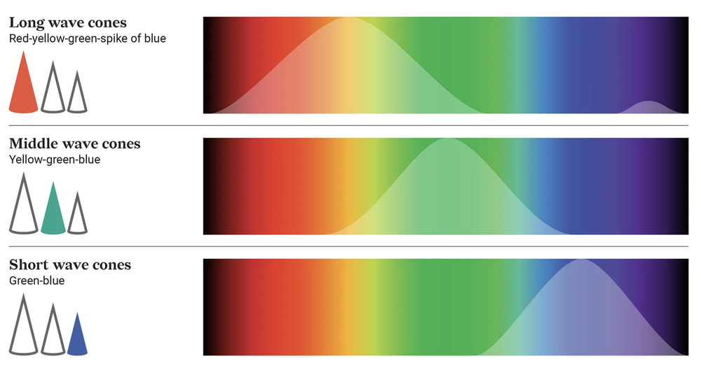
Your retina does colour maths
The three cones overlap heavily, so the retina never sends their raw signals to the brain. It transmits their differences instead, which is far more efficient than three near-identical signals. The signals recombine into three channels: luminance (L+M), red–green (L−M) and blue–yellow (S−(L+M)). Every colour is a point in this three-axis space, and it is why “reddish-green” and “yellowish-blue” don't exist (Hering 1878; Hurvich & Jameson 1957).
Colour isn't universal
Even people with “normal” vision perceive and name colours differently. In the xkcd colour survey, more than 200,000 volunteers were each shown a colour and asked to name it. (Humanity, it turns out, can't spell fuchsia.)
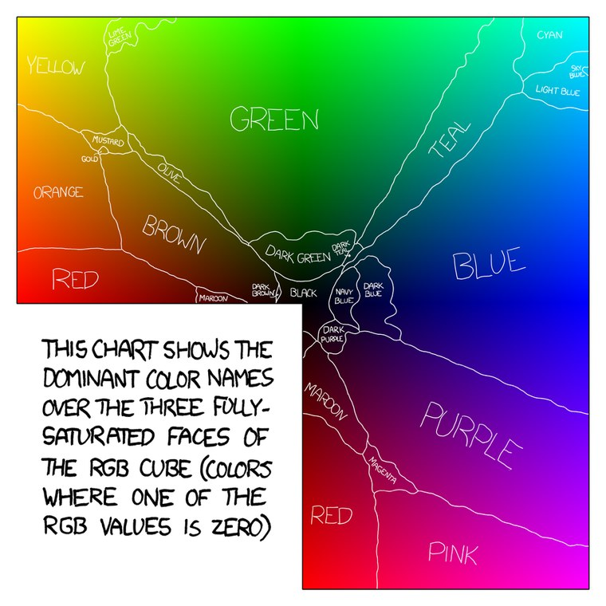
Nor do we tell all colours apart equally well. MacAdam's ellipses mark regions of colour space that look the same to us, and they vary wildly in size and orientation: we are bad at discriminating greens (big ellipses) but good at blues (small ellipses).
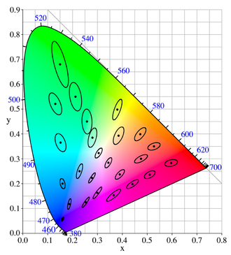
Colour-blindness in a nutshell
When one cone type doesn't work, part of the colour space collapses. Without long-wave cones (protanopia) or middle-wave cones (deuteranopia), reds and greens become hard to tell apart; without short-wave cones (tritanopia), blues and yellows do.
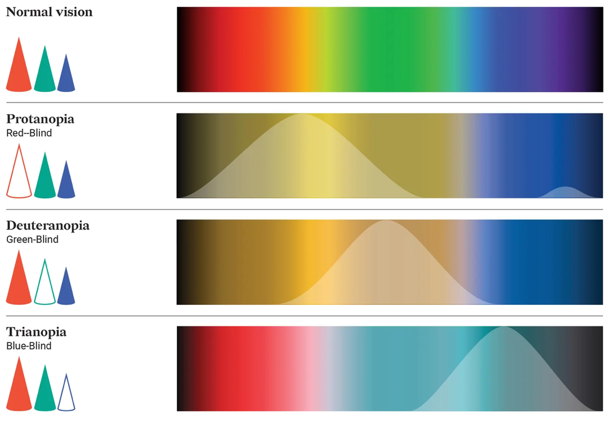
Why should we care?
About 16 in every 200 men and 1 in every 200 women are colour-blind, so you probably know at least 13 colour-blind people. One of them could be your reviewer. And if humans don't convince you: 100 out of 100 dogs are colour-blind too.
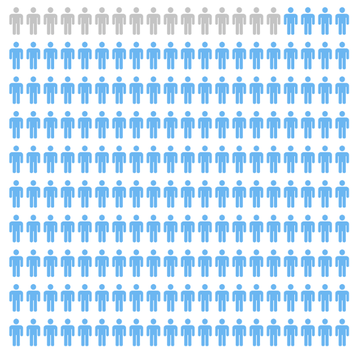
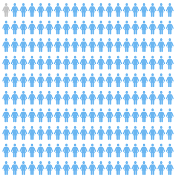
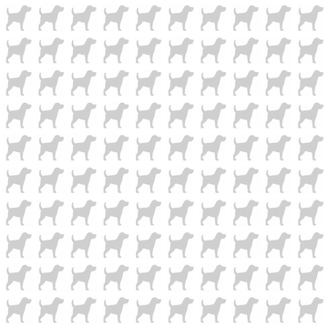
So: use colour-blind-friendly palettes, and check them
Colour-blind-friendly palettes are easy to find. CMasher, for example, shows how each of its colourmaps looks to viewers with different colour-vision deficiencies. Before a figure goes out, run it through a free simulator such as Coblis.
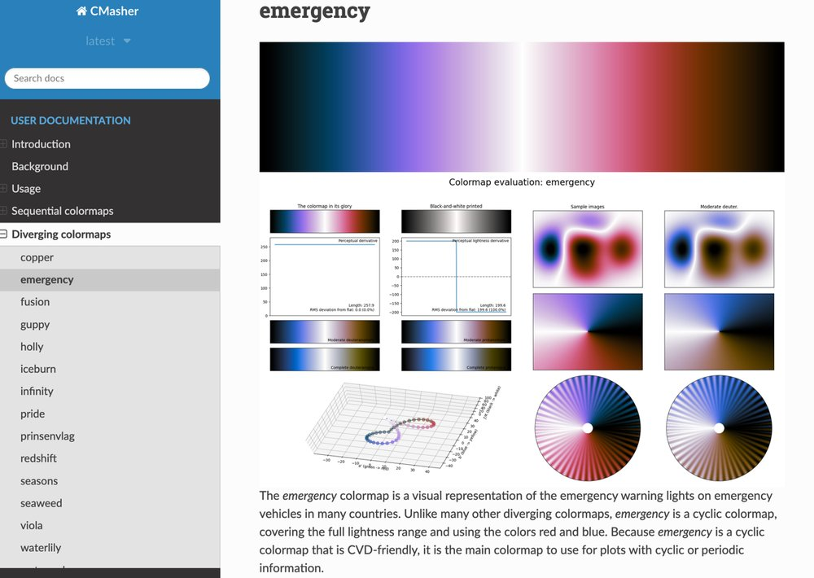
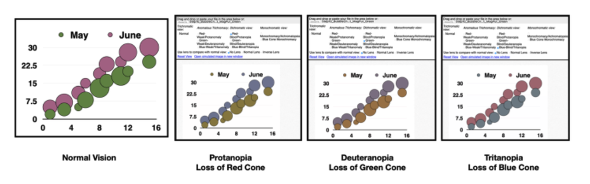
Take-home 1: colour perception is unique. Be inclusive!
And take-home 1.5: mantis shrimp have up to 12 types of photoreceptor. Imagine if their slides only worked for shrimps.
2. When colourmaps lie
Our eyes work in logarithms
We perceive differences in brightness as ratios, not steps: doubling the light feels the same going from 1 to 2 as from 100 to 200. This is the Weber–Fechner law. It lets us see across 14 orders of magnitude, and it is why gamma correction exists.
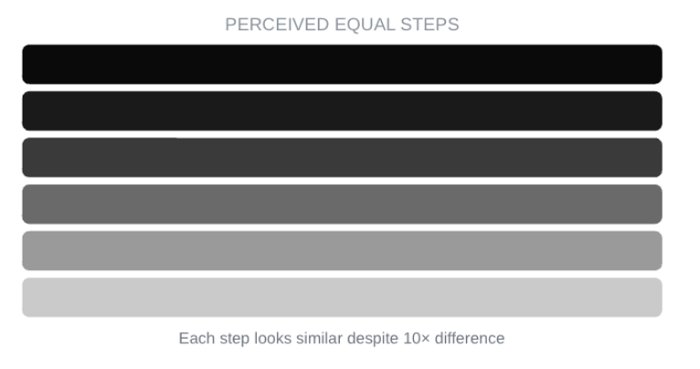
Perceptual uniformity
A good colourmap is perceptually uniform: a 10% change in colour is a 10% change in data. The popular jet colourmap fails this. Print it in greyscale and its lightness rises and falls, giving bright bands and sharp edges that are features of the colourmap, not of the data.
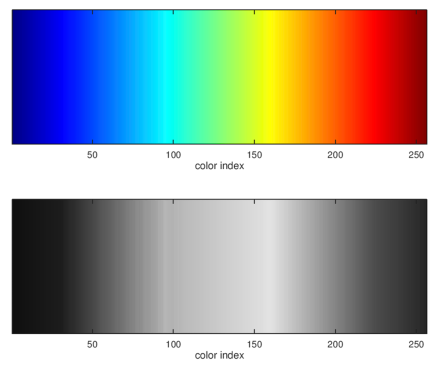
We can measure this by treating each colour as a point and computing the distance between neighbouring colours, distance = √[(R₂−R₁)² + (G₂−G₁)² + (B₂−B₁)²]. In a uniform colourmap, every step covers the same distance.
The viscm tool plots this for any colourmap. For jet, the perceptual derivative jumps around, the lightness goes up and down, and the colours collapse for viewers with deuteranopia or protanopia.
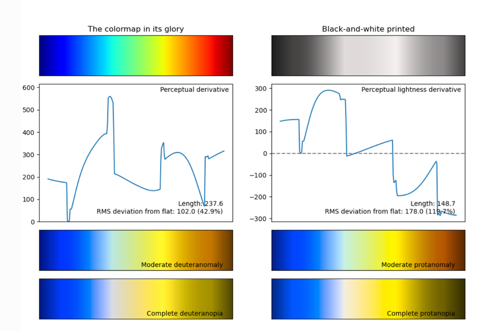
The face test
A quick check: a face shown in a reasonably uniform colourmap still looks like a face. Jet turns it into something else entirely.
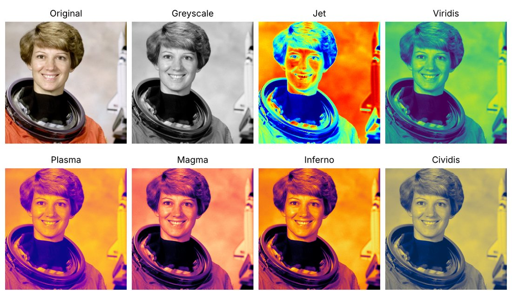
Colour qualifies, the legend quantifies
Colour is good at showing a trend; the numbers belong in the legend. A good colourbar should still convey the trend in greyscale. The data.europa.eu Data Visualisation Guide has a nice example: a rainbow map of rainfall in Texas, where colour alone can't tell you which regions are wetter.
Normalise your data
Colour also needs the right normalisation. A county-level map of the 2016 US election is mostly red because it colours land, not people. Karim Douïeb's animation “Land doesn't vote, people do” turns the same map into circles sized by votes, and the picture changes completely.
A case study: ozone
This example shows total column ozone on a rainbow scale. Based on it, you would identify three zones of sharp change: a polar front (red), a mid-latitude front (yellow) and a sub-polar front (blue).
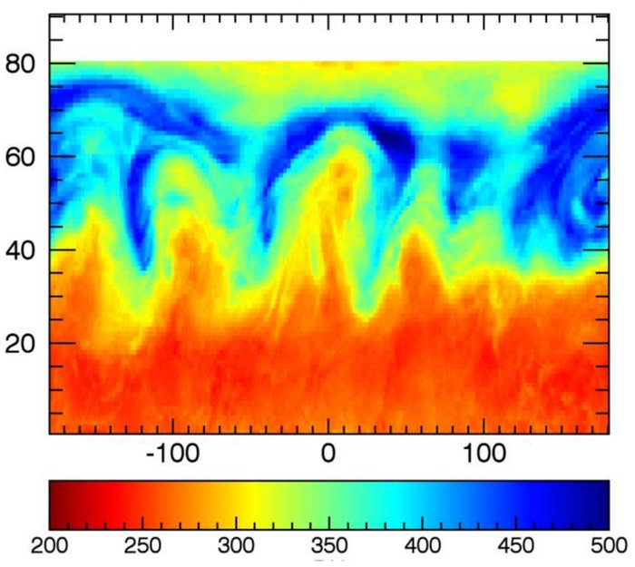
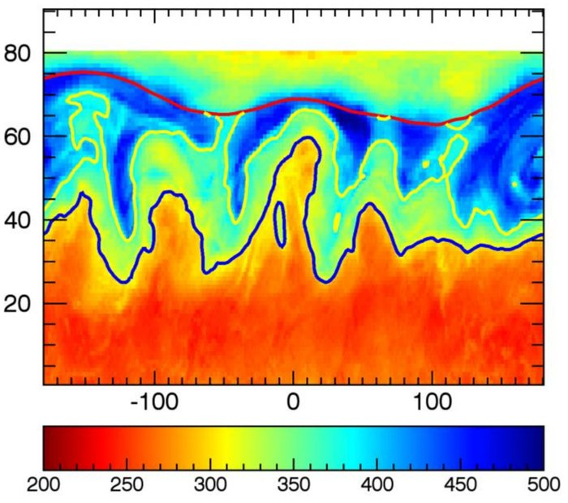
With a uniform colourbar, these “features” disappear. The abrupt changes were an artefact of a non-uniform colourbar.
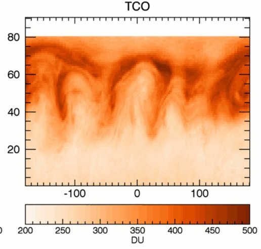
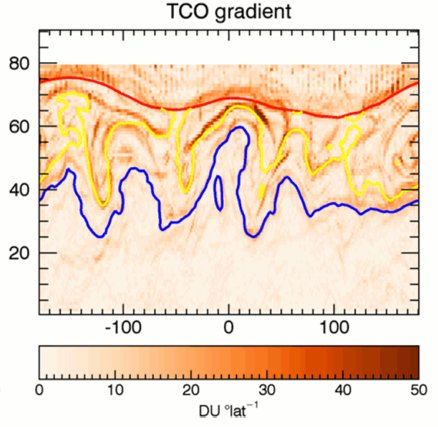
The solution
Use perceptually uniform colourmaps such as inferno, magma, plasma and viridis, which come with matplotlib. Their lightness rises steadily, they survive greyscale printing, and they stay readable for colour-blind viewers.
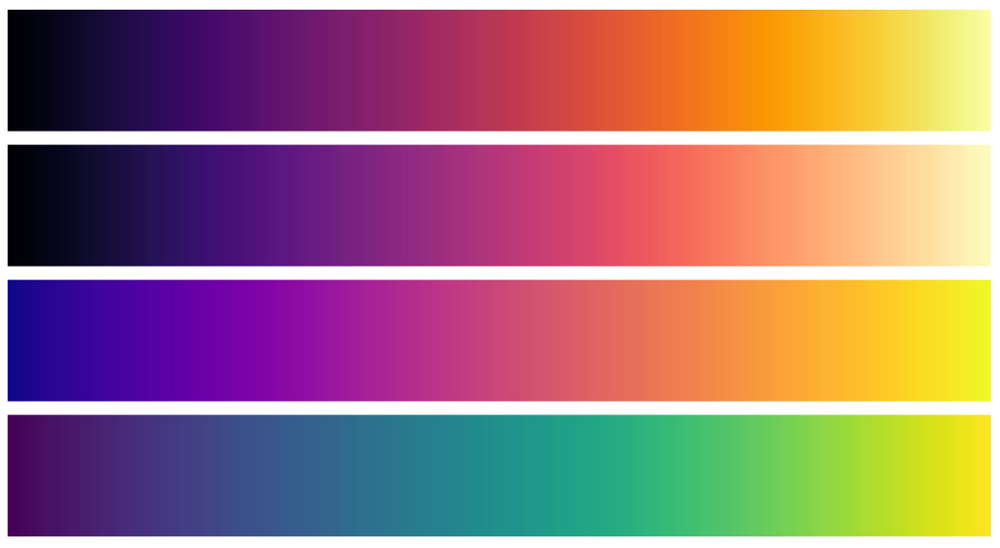
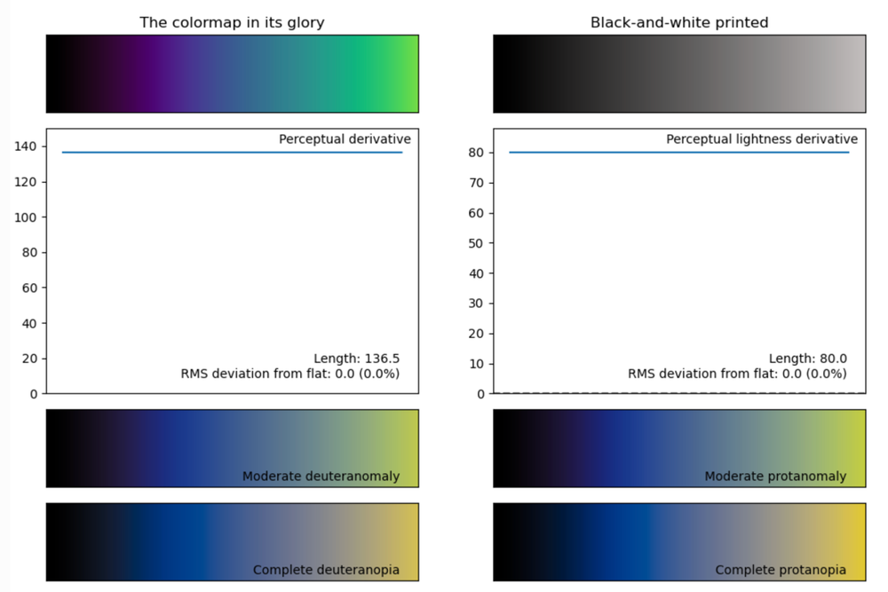
Take-home 2: perceptual uniformity carries accurate data.
3. Breaking the rules
Every cloud has a silver lining
Rainbow maps are not useless. Their striking features give them decent depth perception. Google's Turbo colourmap keeps the rainbow's high contrast while fixing some of jet's problems, and Anton Mikhailov's post introducing it (2019) shows depth images where that contrast helps.
The upside of inaccurate maps
High-contrast maps also reveal small details, which is why medical imaging often uses them. For an example, see the PET images in Burgos et al. (2014).
A thought experiment
Colour-vision tests such as Ishihara's plates hide a number in a field of coloured dots. xkcd's version goes one step further.
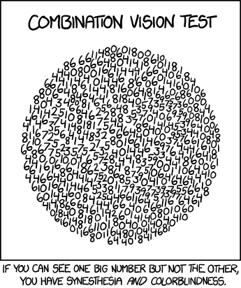
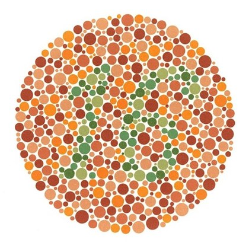
Stay inclusive and uniform, and please, fix your defaults.
Image credits
- Randall Munroe, Color Survey Results (2010) and Combination Vision Test (2013), xkcd, CC BY-NC 2.5.
- D. L. MacAdam (1942), Visual sensitivities to color differences in daylight, JOSA 32, 247. Diagram: Wikimedia Commons.
- E. van der Velden (2020), CMasher, JOSS 5, 2004.
- Colour-blindness simulations: Coblis.
- Diagnostics: viscm, N. J. Smith & S. van der Walt.
- Portrait: NASA, astronaut Eileen Collins, public domain, as distributed with scikit-image.
- Ozone figures: S. Davis (NOAA), via the data.europa.eu Data Visualisation Guide.
- Ishihara colour-vision plate: S. Ishihara (1917), public domain.
- All other figures are my own.
References in the text: E. Hering (1878), Zur Lehre vom Lichtsinne; L. M. Hurvich & D. Jameson (1957), Psychological Review 64, 384.